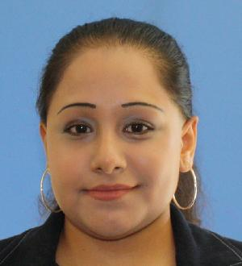

Alada De Nobrega on her first day at FSU
Alada De Nobrega is a student at Florida State University, where she is currently majoring in Informatin Technology, and taking LIS 2360: Web Application Development. This site was created as an example for an assignment that teaches HTML & CSS. The references used for this site are listed below.

Title: "The Self-Driving Car Timeline – Predictions from the Top 11 Global Automakers"
Title: "After Peak Hype, Self-driving Cars Enter the Trough of Disillusionment"
Title: "Top 10 Self-driving Car Companies in the World 2018!"
Title: "Quotes and Training about Self-Driving Cars"